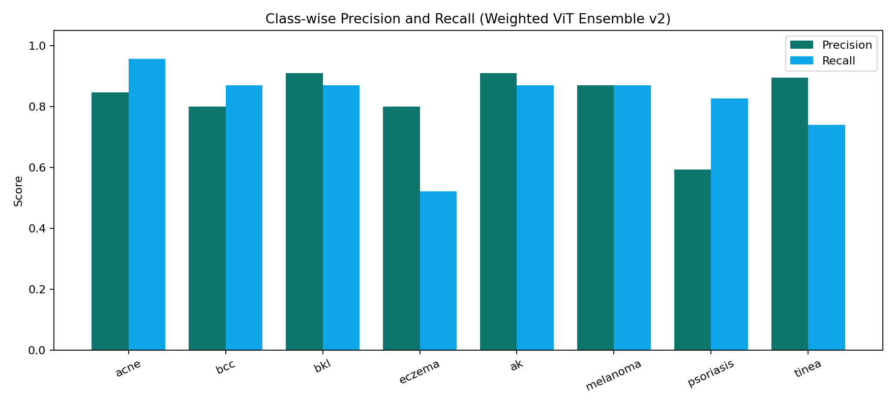
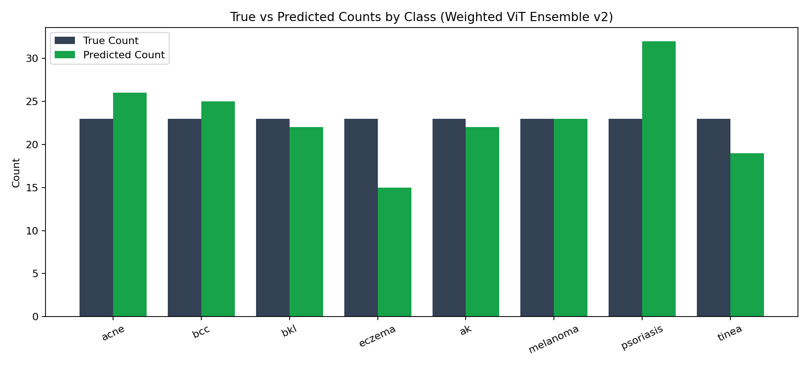
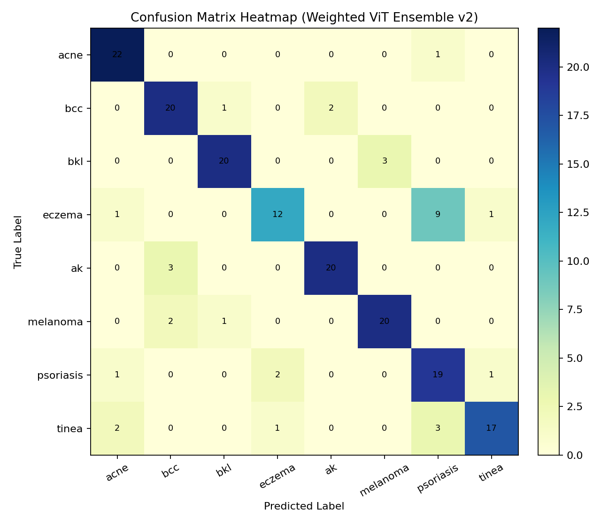

Consolidated technical results for the current best runtime model (weighted ViT ensemble from `website/models/vit_ensemble.json`).
Note: dataset versions share source images. A leakage-safe check (excluding hf_hybrid_220 train/validation overlaps) also improved from 81.88% to 85.00%, so the gain is not solely due to overlap.
| Class | Precision | Recall | Support |
|---|---|---|---|
| Acne | 0.7931 | 1.0000 | 23 |
| Actinic keratosis(AK) | 0.9130 | 0.9130 | 23 |
| Atopic dermatitis(Eczema) | 0.8750 | 0.6087 | 23 |
| Basal cell carcinoma | 0.8800 | 0.9565 | 23 |
| Benign Keratosis-like Lesions (BKL) | 0.9091 | 0.8696 | 23 |
| Melanoma | 0.9091 | 0.8696 | 23 |
| Psoriasis | 0.7143 | 0.8696 | 23 |
| Tinea(Ringworm) | 0.8947 | 0.7391 | 23 |
| true/pred | acne | bcc | bkl | eczema | ak | melanoma | psoriasis | tinea |
|---|---|---|---|---|---|---|---|---|
| acne | 23 | 0 | 0 | 0 | 0 | 0 | 0 | 0 |
| bcc | 0 | 22 | 0 | 0 | 1 | 0 | 0 | 0 |
| bkl | 0 | 0 | 20 | 0 | 1 | 2 | 0 | 0 |
| eczema | 3 | 0 | 0 | 14 | 0 | 0 | 5 | 1 |
| ak | 0 | 2 | 0 | 0 | 21 | 0 | 0 | 0 |
| melanoma | 0 | 1 | 2 | 0 | 0 | 20 | 0 | 0 |
| psoriasis | 1 | 0 | 0 | 1 | 0 | 0 | 20 | 1 |
| tinea | 2 | 0 | 0 | 1 | 0 | 0 | 3 | 17 |


